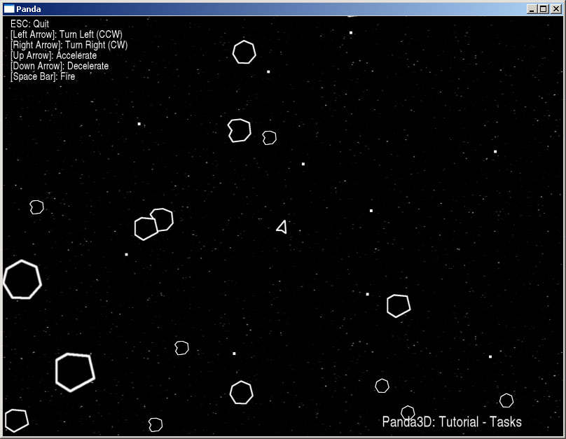

Tasks Tutorial
This tutorial will cover Tasks. Tasks are functions that run during every frame of the program. Panda3D runs a number of tasks during any program, but additional tasks may be added. For this tutorial, tasks will be used to update the ship, asteriod and bullet positions, in addition to checking for collisions. To do this, all the data you need to know is how much time has passed and the velocity of each object.
NOTE: Adding lots of processor intensive tasks will have an adverse affect on the framerate/performance of your program.
For more information on tasks, please consult the Panda3D online manual.
The image below shows the tutorial in action.
